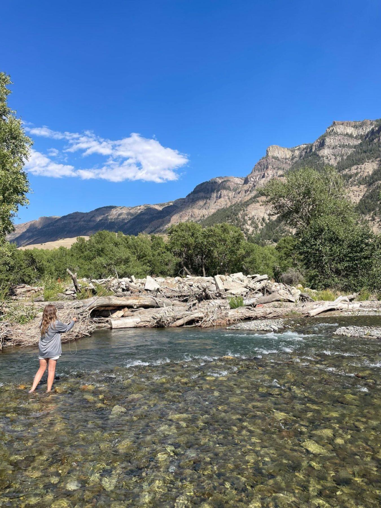
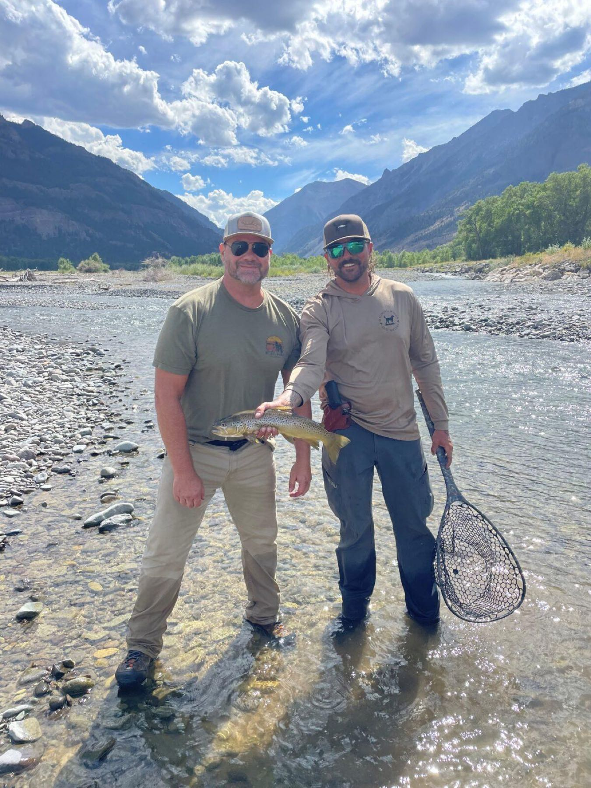
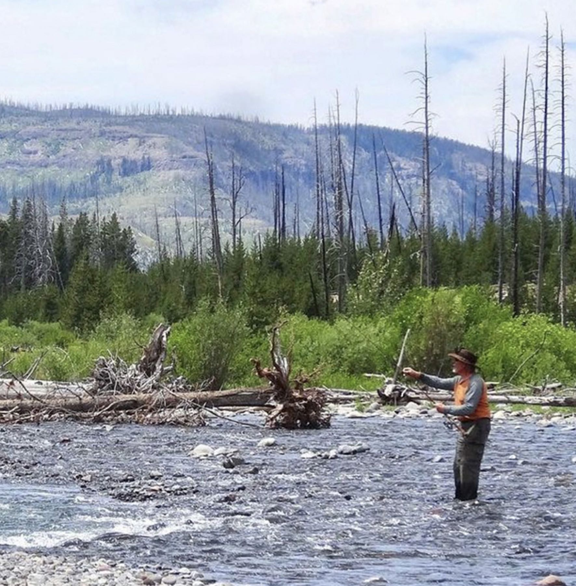
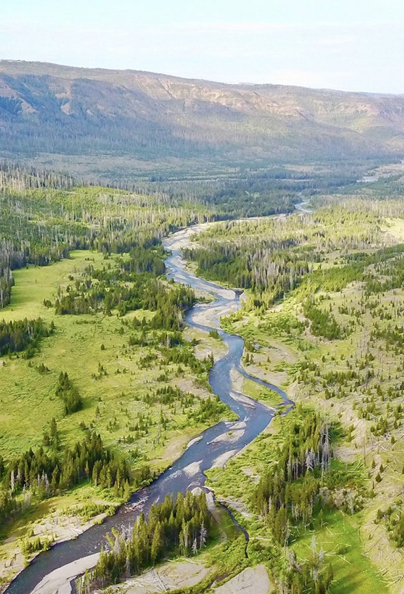

Home · Fishing
We fish the South Fork of the Shoshone and the high country around it, from the home water at the ranch to wilderness lakes a long ride from the nearest road. Wade it, float it, or ride in and camp on it.

South Fork of the ShoshoneCutthroat, brown, rainbow, brook
The South Fork of the Shoshone River holds Cutthroat, Brown, Rainbow, and Brook Trout. It runs right past the WYO Wild Horse Ranch, where every fishing trip is based, so you can be on good water within minutes of stepping off the porch.
How you fish it is up to you. We run trips on horseback, by float, on foot wading, walking up small water, or as an overnight wilderness camp deeper into the high country. Tell us what you are after and we will build the day around it.
Where we fish
We are not tied to one stretch of river. Depending on the season, the flows, and what you want out of the day, we have a wide range of country to work, from famous tailwaters to backcountry lakes most people never see.
Rivers
High country and beyond
How you fish it

All inclusive from the ranchWhat is included
Fishing trips are all inclusive and based out of the WYO Wild Horse Ranch. From the airport to the river and back to the cabin at night, the logistics are ours to sort out so you can keep your mind on the water.
Season and booking
Our fishing season is built around August. Trips run weekly through the month, so you can come for a full week of water with the same guide and the same comforts at the ranch each night.

Plan an August trip
Tell us your dates, your party size, and whether you want to wade, float, or ride in and camp. We will help you sort out the week and send you current rates.